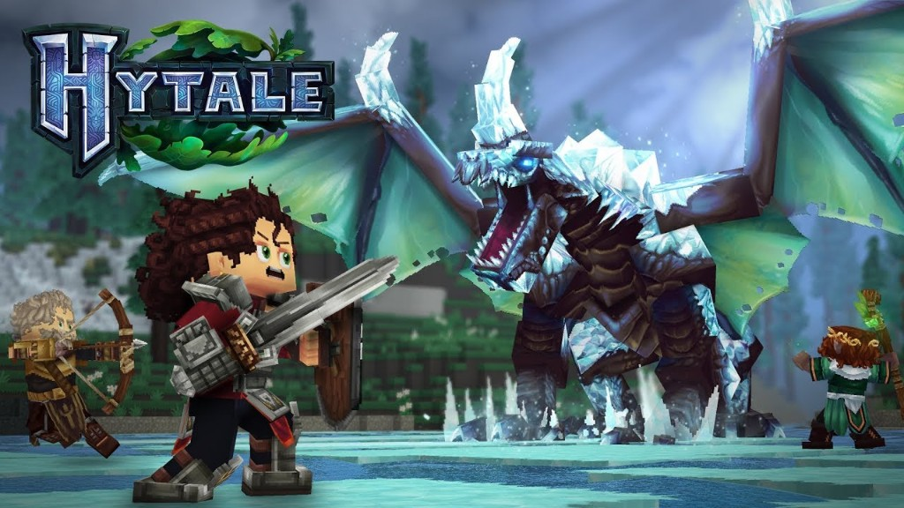
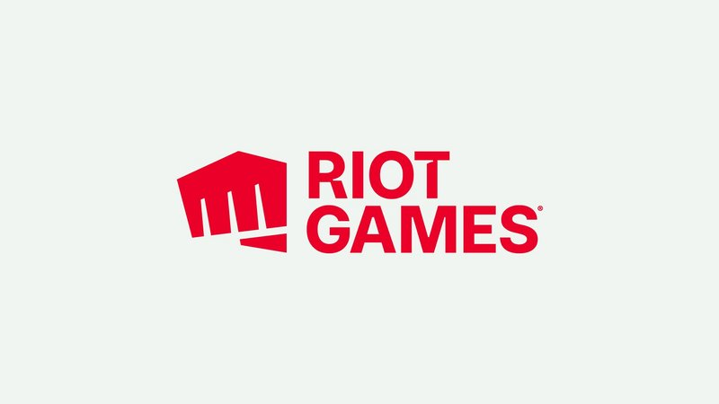

Módulo 2 · Aulas 6 a 10 · 10h
Papéis no desenvolvimento e workflow
A Aula 06 abriu o balcão ético. Agora o Submundo ensina papéis e workflow: quem faz o quê num estúdio, como organizar o trabalho em etapas e como fechar o cercado do escopo antes do projeto estourar. O kickoff do integrador Labirinto de Moedas 2D dura dois encontros (~200 min de prática): individual ou em dupla.
Cinco ofícios
Programação, Arte, Áudio, Game Design e Produção — cada um responde uma pergunta diferente do jogo.
Workflow
Ideia → escopo fechado (MVP) → produção por papel → integração → playtest → corte ou próximo incremento.
Scope Creep
O projeto cresce em ideias sem cortar tempo, pessoas ou features — o monstro amigável que mata indies e trabalhos de sala.
Quem faz o quê num estúdio
- Game Design — o que é divertido e quais as regras? Entrega: GDD curto, loops, balanço.
- Programação — como o jogo funciona na engine? Entrega: scripts, cenas jogáveis, bugs.
- Arte — o que se vê e a identidade visual? Entrega: sprites, tiles, UI, animações.
- Áudio — o que se ouve e sente? Entrega: SFX, música, feedback sonoro.
- Produção — quando, com quem, até onde? Entrega: cronograma, escopo, rituais de sync.
Em indie e na sala de aula, a mesma pessoa veste vários chapéus — mas o quadro ainda nomeia a dona(o) de cada entrega, senão ninguém é dono.
Workflow em etapas (evitar caos)
- Ideia
- Escopo fechado (MVP)
- Produção por papel
- Integração
- Playtest
- Corte ou próximo incremento
- Sem escopo fechado, cada ideia nova empurra o prazo.
- Integração cedo vence “cada um no seu ZIP até a véspera”.
- Playtest curto revela se a meta (coletar moedas no labirinto) está clara.
Scope Creep — o monstro amigável
Sintomas
“Só mais um inimigo” · “e se tiver loja?” · “e se for online?” — ideias boas no momento errado.
Antídoto
Lista do que está fora · produção como guarda do cercado · dizer não com carinho.
Elo Aula 06
A loja ética existe, mas não entra no MVP do Labirinto hoje — isso seria Scope Creep clássico.
Caso: Hytale × Riot Games
Scope Creep não é só “erro de aluno”. Na indústria, visão enorme sem MVP claro pode engolir anos — mesmo com dinheiro e estúdio grande.

Linha do tempo
- 2018 — Trailer: sandbox + RPG + tools + multiplayer…
- 2020 — Riot Games compra a Hypixel Studios.
- 2021+ — Beta não chega; reboot de engine; ambição cresce.
- 2025 — Projeto cancelado (depois reaberto com escopo cortado).
Dinheiro e talento não substituem cercado fechado.

Lição para o Labirinto
- Cada “só mais isso” empurrou o jogo para longe do lançável.
- Até com backing da Riot, falta de MVP claro virou anos sem build pública estável.
- Na sala: sprite + coleta. Loja, boss e online ficam fora.
Senão o Labirinto vira um Hytale de dois encontros — e ninguém entrega.
Um labirinto pequeno e terminado ensina mais que um mundo aberto abandonado. Vocês escolhem ofícios (arte da moeda × programação da coleta), fecham o cercado do escopo e entregam um sprite + coleta mínima — sem pasta sync no Godot.
O foco desta aula (2 encontros)
Trabalhe sozinho (os dois ofícios) ou convide um colega na Oficina. Na dupla: um faz a arte da moeda, o outro a programação da coleta.
- Encontro 1 — teoria + sprite da moeda no LibreSprite.
- Encontro 2 — Godot: pastas,
moeda.tscn, Player + coleta, e diário completo. - Sem pasta sync / Drive dentro do projeto Godot — trabalhem local e documentem no diário.